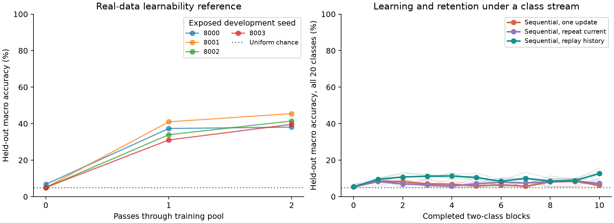
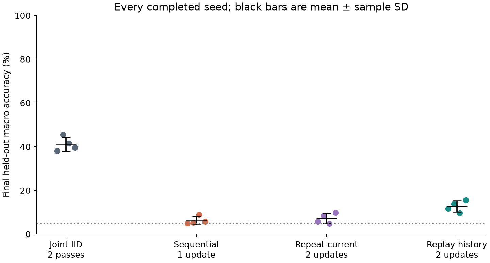
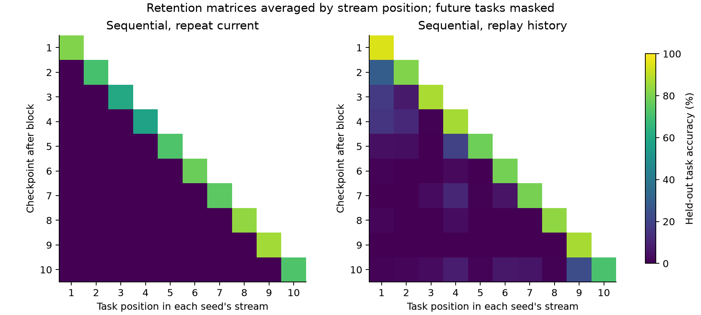
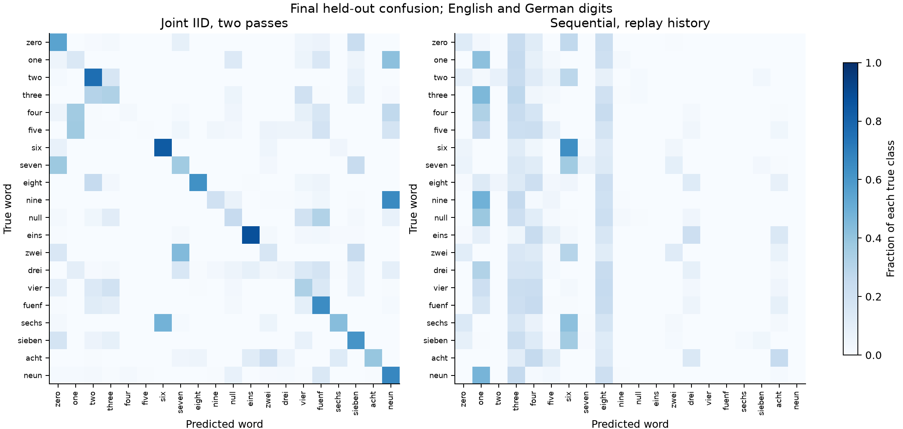
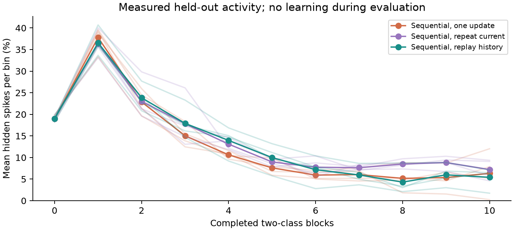

Exploratory local pilot · registered November 3, completed November 4, 2026 · source c4c10b285f · exposed development seeds 8000–8003
These are measurements of the existing, fixed-width e-prop audio learner. The complete SNDL Engine remains blocked by G9_A_UNREADY. This study does not demonstrate growing state, recursive self-improvement, or superiority over transformers or other SNNs.
16 completed runs; 0 recorded algorithm/run failures; 1 interrupted infrastructure attempt retained; 144 saved prediction checkpoints independently rescored. The interrupted attempt is not an additional independent seed. Official SHD test data was never downloaded or used.
Official SHD training archive (CC BY 4.0), publisher MD5 verified. 6,369 training recordings from eight speakers; 1,787 development recordings from speakers 10 and 11. All 20 classes occur in both sets. Inputs are 100 temporal bins × 700 channels of spike counts. All 63,993,588 events are preserved; per-recording duration normalization removes absolute duration. Model: 64 recurrent LIF units, source-default dynamics and gains, Adam 0.002, batch 16, CPU, one thread, GIL off.
Sequential arms see ten two-class blocks. The replay arm uses at most 400 earlier training recordings in a label-blind reservoir; it and the repeated-current control receive exactly matched updates and batch sizes. A 400-frame logical replay payload is 56 MB (53.4 MiB), in addition to the shared dataset cache. Evaluation covers all held-out recordings with learning disabled and unchanged model hashes.
| Arm | Seeds | Macro accuracy (%) | Sample SD (pp) | Overall accuracy (%) | Mean run (min) | Max worker RSS (MiB) |
|---|---|---|---|---|---|---|
| Joint IID, two passes | 4 | 41.16 | 3.20 | 41.47 | 2.5 | 490 |
| Sequential, one update | 4 | 6.22 | 1.83 | 5.61 | 1.5 | 613 |
| Sequential, repeat current | 4 | 7.21 | 2.30 | 6.87 | 2.3 | 708 |
| Sequential, replay history | 4 | 12.68 | 2.57 | 11.67 | 2.3 | 834 |
Replay minus repeated-current updates: mean 5.47 percentage points, sample SD 0.46, over 4 paired exposed seeds.
0 of 4 one-update sequential runs ended predicting a single class. A constant one-class prediction scores exactly 5% macro accuracy across 20 classes; this is a measured collapse, not a rounded or fabricated progress indicator. Exact prediction counts and overall accuracy are retained.
| Arm | Earlier 18 classes, macro (%) | Latest 2 classes, macro (%) | Peak-relative forgetting (pp) |
|---|---|---|---|
| Sequential, one update | 2.48 | 39.90 | 68.84 |
| Sequential, repeat current | 0.00 | 72.09 | 73.78 |
| Sequential, replay history | 6.03 | 72.50 | 78.42 |
These class subsets are scored after global 20-class prediction, without an output mask. Peak-relative forgetting measures the drop from the best earlier checkpoint on each of the first nine tasks. Higher learned peaks can produce larger subsequent drops even alongside higher final accuracy; the endpoints answer different questions. The independent analysis corrected the collector's secondary summary formula, which clipped improvement on earlier tasks to zero. Raw collector summaries are retained; this report uses the registered best-earlier-minus-final definition without clipping. Primary accuracy scores are unaffected.





The IID reference tests whether this representation and update rule can learn the real recordings. The sequential contrasts test forgetting and access to past examples in this component. Replay has historical-data access; its result is not an architecture comparison. Four previously exposed seeds and two held-out speakers cannot establish population-level generalization or a powered effect. The same development split informed feasibility; there is no final-test benchmark score.
Infrastructure incidents are retained in the deviation ledger: dataless Documents archive/source stalls, storage pressure, and loss of worker processes and temporary caches during the final seed. The partial attempt survives; its replacement uses the same seed, code, exact wheel hashes and byte-identical regenerated inputs. The completed-cohort exposure count excludes that interrupted attempt's additional recorded work. A fresh audit compared all 483 original exported files with the pinned GitHub tree; the five imported files were recovered and reverified after cache loss. Every run's imported hashes match the audit. Resource figures measure worker peak RSS and run wall time, not total system memory, energy or calendar duration including setup/interruption.
Use the paired variance and measured throughput to design a separately registered component confirmation cohort; keep the official test sealed until the frozen analysis. This replay-versus-repeat variance cannot size a growth-versus-fixed-capacity engine study. Complete and verify the engine's retention selection, source/admission, G6 progress carrier and durable final-retention bindings, then introduce an event-data Problem adapter. Only after that readiness trajectory should growth, reservoir/feed/return, saved state and recursive improvement receive a full-engine comparison. Extend to SSC after that route and its controls work. Its 100-bin UInt16 cache alone would need about 14.8 GB for all official splits, before raw archives and working space; given observed storage pressure, use chunked preparation or streaming for that extension.
Machine-readable results · Dataset provenance and checks · Fresh source audit · Pre-outcome protocol · Deviations